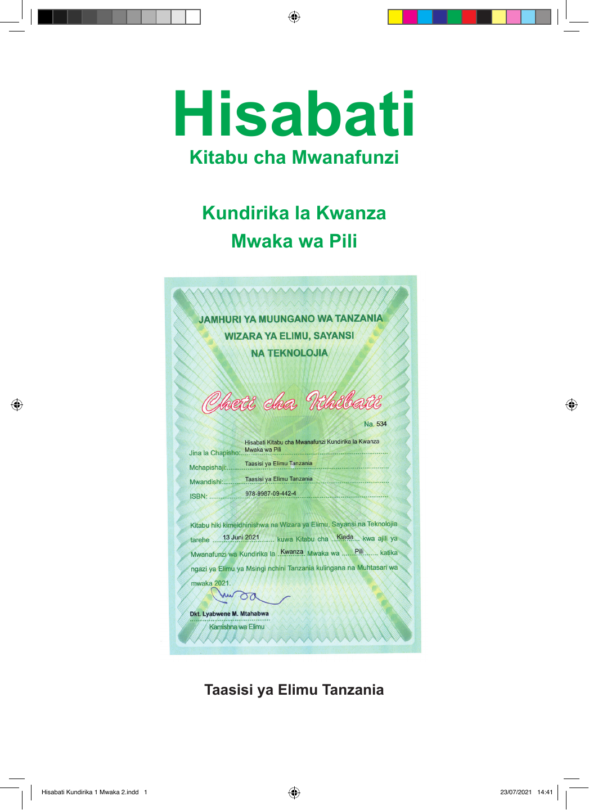

K A T A Hisabati Kitabu cha Mwanafunzi Kundirika la Kwanza Mwaka wa Pili Taasisi ya Elimu Tanzania Hisabati Kundirika 1 Mwaka 2.indd 1 23/07/2021 14:41 Hisabati A Kitabu cha Mwanafunzi Kundirika la Kwanza Mwaka wa Pili T A K Taasisi ya Elimu Tanzania Hisabati Kundirika 1 Mwaka 2.indd 1 23/07/2021 14:41